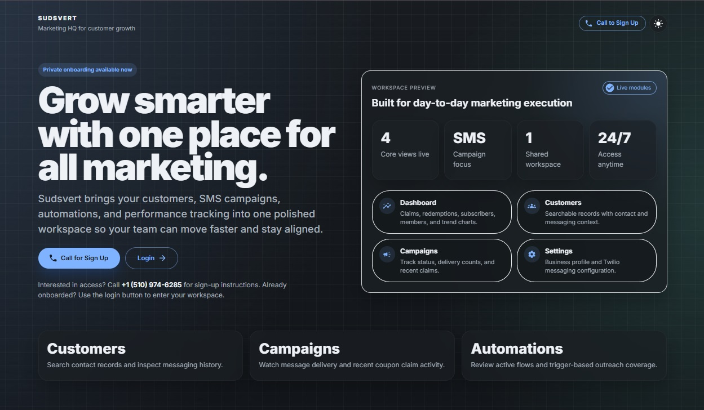

Sudsvert: Marketing HQ for Customer Growth
Sudsvert is a polished marketing workspace built to bring customer records, SMS campaigns, automations, and performance tracking into one place. The current product is live for private onboarding and gives teams a shared operational view of claims, redemptions, subscribers, campaign activity, and business messaging setup. The live product is available at namegenie.eu.

Built for day-to-day marketing execution
The product centers on the workflows a team actually needs every day: checking performance, finding a customer record quickly, reviewing messaging history, watching campaign delivery, and confirming automation coverage. Instead of splitting those tasks across disconnected tools, Sudsvert turns them into one shared workspace that feels calm, readable, and immediately actionable.
Focus: Customer visibility, SMS campaign operations, automation oversight, and marketing performance review.
Live modules: Dashboard, Customers, Campaigns, Settings, plus automation tracking built into the current experience.
What it shows: SaaS product thinking, dashboard information architecture, and interface design aligned with real operational use.

Operational clarity now, broader attribution next
The current release already covers the essentials: performance dashboards for claims and subscribers, searchable customer records with messaging context, campaign monitoring, and visibility into active automations. The roadmap extends that foundation toward deeper multi-location insight, Google Ads connectivity, and social campaign integration so marketing teams can compare channels and attribution from one central product surface.
Sudsvert reflects the kind of software I enjoy building most: interfaces that are visually polished, but grounded in the practical needs of the people using them to make decisions every day. It is a good example of shaping a product around workflow clarity first, then expanding the platform without losing that focus.